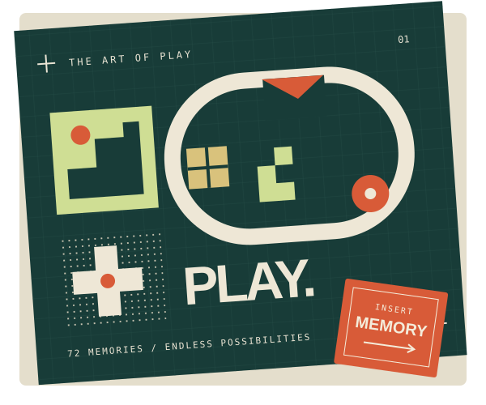

ORIGINAL GEOMETRIC STUDY — 00172作品与系列
10主题分组
图鉴与原创实验
21 款原创玩法现已可玩
PLAY LAB / 原创玩法实验
读过经典，也亲手玩一局。
21 款原创游戏 · 266 关旅程。
经典机制，新的原创体验。
原创机制实验与经典原作介绍分开呈现。地图、角色、画面与音效为原创，不提供原游戏资源。更多作品持续补充。
THE COLLECTION / 图鉴目录
选一段记忆，重新发现经典。
按主题翻阅，或找一个熟悉的名字。
点开卡片，了解玩法、版本与资料。
/
这一页，暂时没有找到。
试试英文名、常见别名，或减少筛选条件。
图鉴暂时无法读取
请检查网络后重新加载。如果正在本地打开，请使用静态 HTTP 服务访问。
A NOTE FROM THE ATLAS
经典，不止一种模样。
这是一份跨平台、跨年代的代表作品图鉴，不是销量榜、评分榜或严格的历史排名。十个分组是阅读主题，混合时代、场景与类型，不是游戏平台分类。卡片另列代表平台与玩法类型。
“系列”“作品”“作品版本”与“玩法谱系”分别标注。系列介绍概括共同体验，不代表每代都有相同规则；重制版、合集与后继品牌只作为注明范围的资料入口。
读文字，也看出处
优先引用开发商、发行商、官方商店和博物馆；详情显示来源关系与核读状态。页面可读不等于所有事实都已验证。
留住记忆，尊重创作
介绍文字与几何插画为本项目原创；插画不代表原游戏画面。游戏名称及相关商标属于各自权利人。独立提供原创玩法实验，不冒称原作完整复刻，不提供 ROM 或原游戏资源。